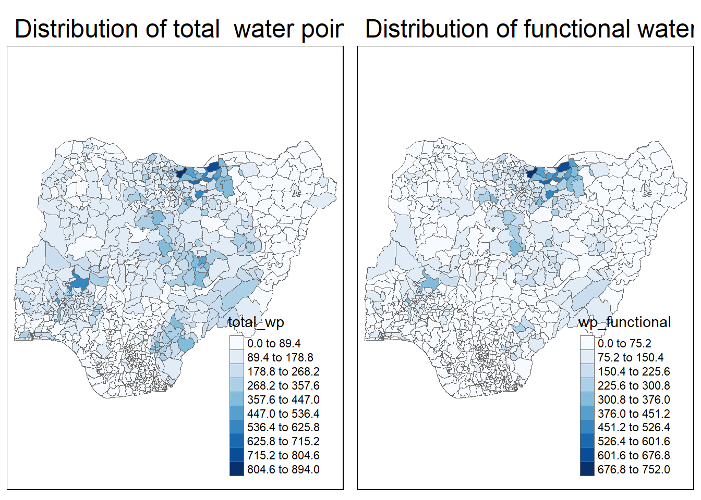
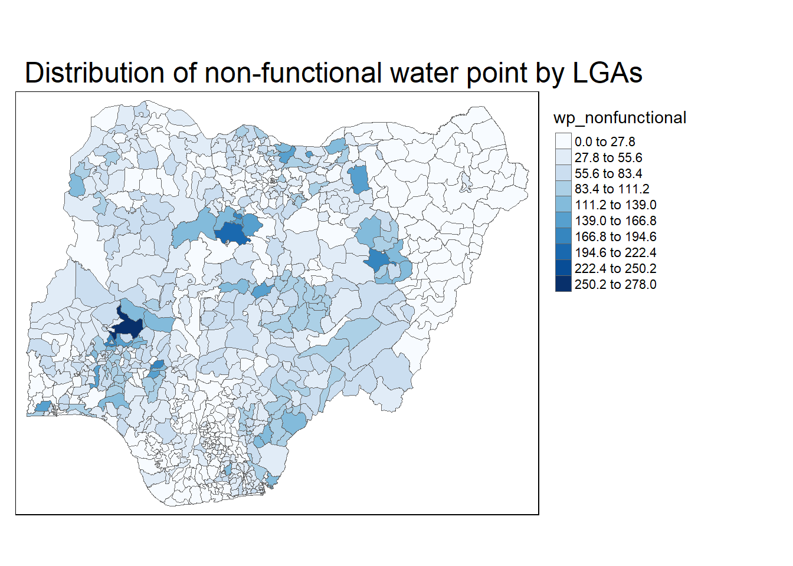
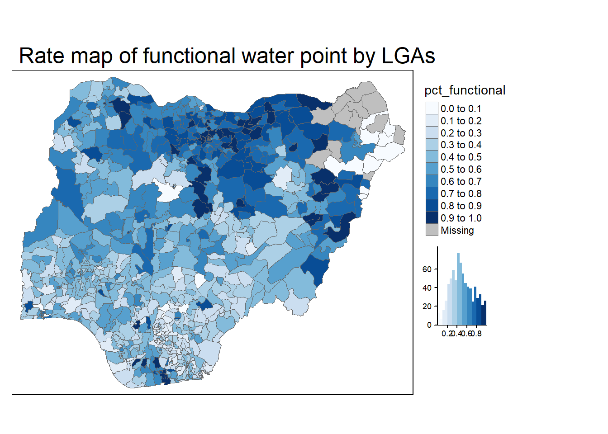
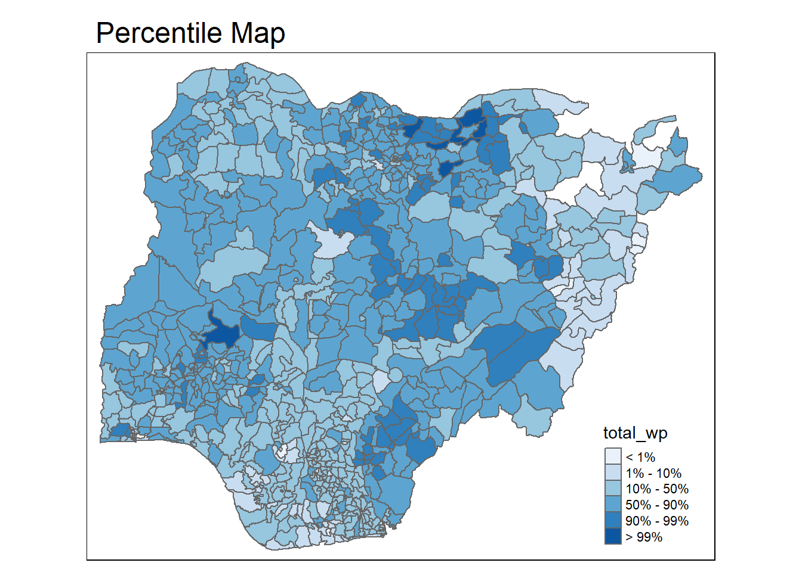
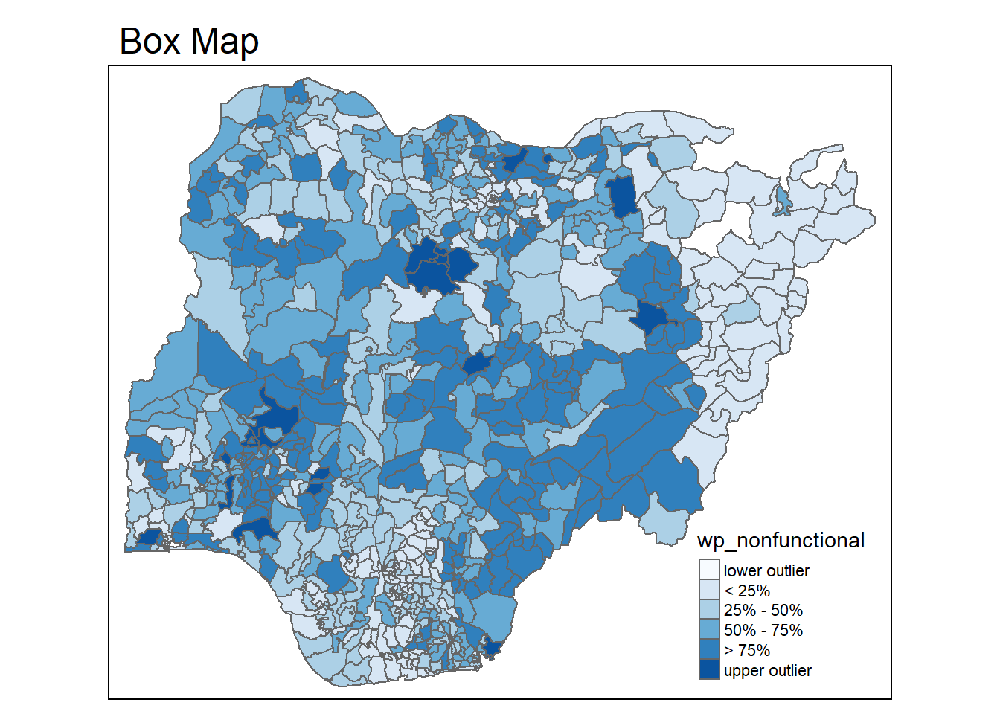

pacman::p_load(tmap, tidyverse, sf)Hands-on Exercise 8.3: Analytical Mapping
1 Overview
In this session, we explore how to use tmap and tidyverse to:
Import geospatial data in RDS format into R.
Create high-quality choropleth maps using appropriate tmap functions.
Generate different thematic maps, including:
Rate maps
Percentile maps
Boxmaps
2 Getting Started
The below code chunk uses p_load() to load the relevant packages into R environment.
2.1 Importing data
For this hands-on exercise, we will use the NGA_wp.rds dataset, a polygon feature data.frame containing information on water points in Nigeria at the LGA level. The dataset is located in the rds sub-directory of the hands-on data folder.
NGA_wp <- read_rds("data/rds/NGA_wp.rds")3 Basic Choropleth Mapping
3.1 Visualising distribution of non-functional water point
The below code chunk plots a choropleth map showing the distribution of total and functional water point by LGA.
p1 <- tm_shape(NGA_wp) +
tm_fill("wp_functional",
n = 10,
style = "equal",
palette = "Blues") +
tm_borders(lwd = 0.1,
alpha = 1) +
tm_layout(main.title = "Distribution of functional water point by LGAs",
legend.outside = FALSE)
p2 <- tm_shape(NGA_wp) +
tm_fill("total_wp",
n = 10,
style = "equal",
palette = "Blues") +
tm_borders(lwd = 0.1,
alpha = 1) +
tm_layout(main.title = "Distribution of total water point by LGAs",
legend.outside = FALSE)
tmap_arrange(p2, p1, nrow = 1)
The below code chunk plots a choropleth map showing the distribution of non-function water point by LGA.
tm_shape(NGA_wp) +
tm_fill("wp_nonfunctional",
n = 10,
style = "equal",
palette = "Blues") +
tm_borders(lwd = 0.1,
alpha = 1) +
tm_layout(main.title = "Distribution of non-functional water point by LGAs",
legend.outside = TRUE)
4 Choropleth Map for Rates
Our readings have emphasized the importance of mapping rates rather than counts, as water points are not evenly distributed across space. Without considering the number of water points in a given area, we risk mapping total water point size rather than accurately representing our topic of interest.
4.1 Deriving Proportion of Functional Water Points and Non-Functional Water Points
We will calculate the proportion of functional and non-functional water points for each LGA. The following code chunk utilizes the mutate() function from the dplyr package to create two new fields: pct_functional and pct_nonfunctional.
NGA_wp <- NGA_wp %>%
mutate(pct_functional = wp_functional/total_wp) %>%
mutate(pct_nonfunctional = wp_nonfunctional/total_wp)4.2 Plotting map of rate
The below code chunk plots a choropleth map showing the distribution of percentage functional water point by LGA.
tm_shape(NGA_wp) +
tm_fill("pct_functional",
n = 10,
style = "equal",
palette = "Blues",
legend.hist = TRUE) +
tm_borders(lwd = 0.1,
alpha = 1) +
tm_layout(main.title = "Rate map of functional water point by LGAs",
legend.outside = TRUE)
5 Extreme Value Maps
Extreme value maps are a specialized form of choropleth maps designed to emphasize extreme values at both the lower and upper ends of the scale, making it easier to identify outliers. These maps are rooted in the concept of spatial exploratory data analysis (EDA), integrating spatial elements into traditional non-spatial EDA techniques (Anselin, 1994).
5.1 Percentile Map
A percentile map is a specialized type of quantile map that categorizes data into six specific percentile ranges: 0-1%, 1-10%, 10-50%, 50-90%, 90-99%, and 99-100%. These breakpoints can be determined using the quantile function in base R by specifying a vector of cumulative probabilities: c(0, .01, .1, .5, .9, .99, 1). It is essential to include both the starting (0) and ending (1) points to ensure proper classification.
5.1.1 Data Preparation
First we exclude records with NA using the code chunk below.
NGA_wp <- NGA_wp %>%
drop_na()Next we create customised classification and extract values using below code chunk.
percent <- c(0,.01,.1,.5,.9,.99,1)
var <- NGA_wp["pct_functional"] %>%
st_set_geometry(NULL)
quantile(var[,1], percent) 0% 1% 10% 50% 90% 99% 100%
0.0000000 0.0000000 0.2169811 0.4791667 0.8611111 1.0000000 1.0000000 Note: When extracting variables from an sf data frame, the geometry column is included by default. While this behavior is useful for mapping and spatial analysis, it can cause issues with base R functions that do not support spatial objects. For example, using the quantile() function on an sf data frame will result in an error. To resolve this, the st_set_geometry(NULL) function is used to drop the geometry column, allowing standard data operations to proceed without complications.
5.1.2 Why writing functions?
Writing a function offers three key advantages over copy-and-paste:
Improved Readability – Assigning a meaningful name to a function makes the code more intuitive and easier to understand.
Easier Maintenance – When requirements change, updating the code in one place ensures consistency and avoids redundancy.
Reduced Errors – Functions eliminate the risk of accidental mistakes, such as forgetting to update a variable name in multiple locations.
5.1.3 Creating the get.var function
First, we will define an R function to extract a specified variable (e.g., wp_nonfunctional) as a vector from an sf data frame.
Arguments:
vname: Name of the variable to extract (as a character, in quotes).df: Thesfdata frame from which the variable will be extracted.
Return:
v: A vector containing the values of the specified variable, without a column name.
get.var <- function(vname,df) {
v <- df[vname] %>%
st_set_geometry(NULL)
v <- unname(v[,1])
return(v)
}5.1.4 A percentile mapping function
Next, we write a percentile mapping function by using the code chunk below.
percentmap <- function(vnam, df, legtitle=NA, mtitle="Percentile Map"){
percent <- c(0,.01,.1,.5,.9,.99,1)
var <- get.var(vnam, df)
bperc <- quantile(var, percent)
tm_shape(df) +
tm_polygons() +
tm_shape(df) +
tm_fill(vnam,
title=legtitle,
breaks=bperc,
palette="Blues",
labels=c("< 1%", "1% - 10%", "10% - 50%", "50% - 90%", "90% - 99%", "> 99%")) +
tm_borders() +
tm_layout(main.title = mtitle,
title.position = c("right","bottom"))
}5.1.5 Test drive the percentile mapping function
The below code chunk runs the function.
percentmap("total_wp", NGA_wp)
5.2 Box map
A box map is an enhanced version of a quartile map that includes additional categories to highlight extreme values.
If lower outliers exist, the first break starts at the minimum value, and the second break is the lower fence.
If there are no lower outliers, the first break begins at the lower fence, and the second break is the minimum value (resulting in no observations falling between these two values).
ggplot(data = NGA_wp,
aes(x = "",
y = wp_nonfunctional)) +
geom_boxplot()
A box map applies boxplot concepts to choropleth mapping by using custom breakpoints. However, defining these breakpoints is complex because they depend on the presence of outliers:
If lower outliers exist, breakpoints start at the minimum value and extend to the lower fence.
If upper outliers exist, breakpoints extend beyond the upper fence to highlight extreme values.
This approach enhances spatial analysis by effectively identifying and visualizing statistical outliers in geographic data.
5.2.1 Creating the boxbreaks function
The following R function generates breakpoints for a box map by computing quartiles and fences:
Arguments
v: A numeric vector containing the observations.
mult: A multiplier for the interquartile range (IQR), defaulting to 1.5.
Output
- bb: A vector containing seven breakpoints, computed based on quartiles and fences.
boxbreaks <- function(v,mult=1.5) {
qv <- unname(quantile(v))
iqr <- qv[4] - qv[2]
upfence <- qv[4] + mult * iqr
lofence <- qv[2] - mult * iqr
# initialize break points vector
bb <- vector(mode="numeric",length=7)
# logic for lower and upper fences
if (lofence < qv[1]) { # no lower outliers
bb[1] <- lofence
bb[2] <- floor(qv[1])
} else {
bb[2] <- lofence
bb[1] <- qv[1]
}
if (upfence > qv[5]) { # no upper outliers
bb[7] <- upfence
bb[6] <- ceiling(qv[5])
} else {
bb[6] <- upfence
bb[7] <- qv[5]
}
bb[3:5] <- qv[2:4]
return(bb)
}5.2.2 Creating the get.var function
The code chunk below creates an R function to extract a variable as a vector out of an sf data frame.
Arguments
vname: The name of the variable to extract (as a character string, in quotes).
df: The sf data frame containing the variable.
Output
- v: A vector containing the values of the specified variable, excluding the column name.
get.var <- function(vname,df) {
v <- df[vname] %>% st_set_geometry(NULL)
v <- unname(v[,1])
return(v)
}5.2.3 Test drive the newly created function
Let’s test the newly created function.
var <- get.var("wp_nonfunctional", NGA_wp)
boxbreaks(var)[1] -56.5 0.0 14.0 34.0 61.0 131.5 278.05.2.4 Boxmap function
The code chunk below is an R function to create a box map.
Arguments
vnam: The name of the variable to be mapped (as a character string, in quotes).
df: A simple features (sf) polygon layer containing the spatial data.
legtitle: Title for the legend.
mtitle: Title for the map.
mult: Multiplier for the interquartile range (IQR), used to determine outlier thresholds.
Output
- A tmap element that generates a choropleth box map, highlighting spatial patterns and outliers based on statistical distribution.
boxmap <- function(vnam, df,
legtitle=NA,
mtitle="Box Map",
mult=1.5){
var <- get.var(vnam,df)
bb <- boxbreaks(var)
tm_shape(df) +
tm_polygons() +
tm_shape(df) +
tm_fill(vnam,title=legtitle,
breaks=bb,
palette="Blues",
labels = c("lower outlier",
"< 25%",
"25% - 50%",
"50% - 75%",
"> 75%",
"upper outlier")) +
tm_borders() +
tm_layout(main.title = mtitle,
title.position = c("left",
"top"))
}tmap_mode("plot")
boxmap("wp_nonfunctional", NGA_wp)